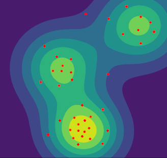

Talk for Nvidia
Geometry
in
Score-Based
Generative Modelling
Follow along at mjhutchinson.info/#talks


What do I mean by geometry in this context?
Locally: manifolds look Euclidean (flat); Globally: they look very different
Many common concepts are different in non-Euclidean space!
| Euclidean Space | Manifolds | |
|---|---|---|
| Straight lines | \(x + t(y-x)\) | Geodesics |
| Distances | \(\norm{x-y} = \sqrt{}\sum \del{x_i - y_i}^2\) | \(d(x, y)\) |
| Getting between points | \( x + (y-x)\) | \(\exp(x, \textcolor{red}{\log(x, y)})\) |
| Tangent space | \(\R^d\) | \(\R^d\) |

Molecules
Climate data
Proteins

Robotics

Lie groups

Trees
Generically, in generative modelling we are looking to parmetrise an unknown density. Typically we have access to samples from that density. We may want to:
Simple distribution
Easy to sample
A transformation
We train this
Unknown complex distribution
We have samples from this
These typically have restricted forms on the models, or are trained via surrogate ELBOs.
The adversarial losses of these models can be very tricky to train, and we have no access to likelihoods from the models.
What benefit do score based models bring?
How do score-based generative models work?
|
A forward process... |

|
|
...which we then reverse |

|
|
GIFs reproduced from https://yang-song.net/blog/2021/score/
|
|
How do score-based generative models work?
The forward noising process is a Stochastic differential equation (SDE)
which should in the limit \(t \to \infty\) converge to a stable analytic distribution. Typical score matching uses the Ornstein-Uhlenbeck process:
which converges to a Gaussian. Other options exist.
The reverse can be proved to be defined by:
Where \( p_t(\m{X})\) is the evolved density of the SDE at time \(t\).
Ideally, we would train the score function \(\m{s}\) to match the score directly.
Clearly ths won't work... We can introduce a conditional expectation with the same minimiser:
We can compute \(\nabla_{\m{X}} \log p_t(\m{X}_t | \m{X}_0)\)! But sampling \(p_{0|t}\) is hard.
Using usual probability rules we can flip the time indices!
Why is this useful?
Now we just integrate over the time variable with some weighting \(\textcolor{red}{\lambda(t)}\)
And with this we can learn the score, simulation free!
N.B. This objective is high variance, and requires us to take a running average of the parameters at test time.
Given an SDE of the form
We can discretise this with steps of the form
You can get error bounds on the convergence to the true SDE, and you can use this to sample the forward and backwards SDE.
You can use Langevin correction steps to help sampling as well.
Targets exactly the density \(p_t\) when discretised.
Given an SDE of the form
The following ODE has the same time-marginals
With this ODE we can:
How do score-based generative models work?
|
A forward process...
|
|
|
...which we then reverse
|
|
|
GIFs reproduced from https://yang-song.net/blog/2021/score/
|
|

The typical forward SDE is in fact a specific form of Langevin dynamics
Where you have \(U(\m{X}) = \m{X}^2\), this gives a Gaussian
As it turns out, Langevin dynamics still hold on most manifolds
This result has been proved in a number of ways with increasingly modern tools, some examples:
but none of these results apply outside the Euclidean setting \(\rightarrow\) we will need to generalise this.
Why is this hard? \(\rightarrow\) Geometry \(\cap\) Stochastic processes throws up technical difficulties with regularity of functions.
How do we solve this in the end?
Given an SDE of the form
We would discretise this with steps of the form
On manifolds we need to generalise this a little bit
Given an SDE of the form
We would discretise this with steps of the form
Given an SDE of the form
We would discretise this with steps of the form
These we well known, but we produce a new error control theorem for time-inhomogenous SDEs.
Fortunately the denoising score-matching objective carries over with no trouble to manifolds. That is
Our issue comes with evaluating \(\nabla_{\m{X}_t}\log p_{t|0}(\m{X}_t | \m{X}_0)\) and sampling \(p_{t|0}(\m{X}_t | \m{X}_0)\)
If we have the eigenpairs \((\lambda_j, \phi_j)\) of the Laplace-Beltrami operator \( \Delta_\c{M}\) then
Alternatively we have in the small time limit:

What if we can't approximate the conditional score?
Using a divergence theorem for non-compact manifolds (e.g. Gaffney 1954) we can show an identical result. with some regularity conditions...
That is:
And the usual Hutchinson trace trick estimator can be used [Song et al. 2019].
| Loss | Approximation | Loss function | Requirements | Complexity | |
|---|---|---|---|---|---|
| \(p_{t|0}\) | \( \exp^{-1} \) | ||||
| DSM | None | \(\E\sbr{\norm{\m{s}(\X ) - \nabla_{\m{X}_t}\log p_{t|0}(\m{X}_t | \m{X}_0)}^2}\) |

|
|
\(\c{O}(1)\) |
| Truncation | \(\E\sbr{\norm{\m{s}(\X ) - \nabla_{\m{X}_t}\log S_J(\m{X}_t, \m{X}_0)}^2}\) | Expansion |
|
\(\c{O}(1)\) | |
| Varhardan | \(\E\sbr{\norm{\m{s}(\X ) - \exp_{\m{X}_t}^{-1}(\m{X}_s)/t}}\) |
|
|
\(\c{O}(1)\) | |
| ISM | Deterministic | \(\E\sbr{\norm{\m{s}(t, \m{X}_t)}^2 + 2 \operatorname{div}(t, \cdot)(\m{X}_t)}\) |
|
|
\(\c{O}(d)\) |
| Stochastic | \(\E\sbr{\norm{\m{s}(t, \m{X}_t)}^2 + 2 \m{\varepsilon}^\top\operatorname{div}(t, \cdot)(\m{X}_t)\m{\varepsilon}}\) |
|
|
\(\c{O}(1)\) | |
- Use ISM


Place a 2-mode mixture-of-Gaussian ditribution on \(\c{S}_1^n\).
Place a M-mode mixture-of-Gaussian ditribution on \(SO(3)\).
| Method | $M=16$ | $M=32$ | $M=64$ | |||
|---|---|---|---|---|---|---|
| LL | NFE ($\times 10^3$) | LL | NFE ($\times 10^3$) | LL | NFE ($\times 10^3$) | |
| Moser Flow | $0.85_{\pm 0.03}$ | $2.3_{\pm0.5}$ | $0.17_{\pm0.03}$ | $2.3_{\pm0.9}$ | $-0.49_{\pm0.02}$ | $7.3_{\pm1.4}$ |
| Exp-wrapped SGMs | $0.87_{\pm 0.04}$ | $0.5_{\pm0.1}$ | $0.16_{\pm0.03}$ | $0.5_{\pm0.0}$ | $-0.58_{\pm0.04}$ | $0.5_{\pm0.0}$ |
| RSGM | $0.89_{\pm 0.03}$ | $0.1_{\pm0.0}$ | $0.20_{\pm0.03}$ | $0.1_{\pm0.0}$ | $-0.49_{\pm0.02}$ | $0.1_{\pm0.0}$ |


Riemannian
Score-Based Generative Modelling.
V. D. Bortoli*, E. Mathieu*, M. Hutchinson*, J.
Thornton, Y. W. Teh, A.
Doucet.
Neurips, 2022.
Diffusion Models
for
Constrained Domains.
N. Fishman, L. Klarner, V. D. Bortoli, E. Mathieu, M.
Hutchinson.
TMLR, 2023.
Metropolis Sampling
for
Constrained Diffusion Models
.
N. Fishman, L. Klarner, E. Mathieu, M. Hutchinson, V. D. Bortoli.
arXiv:2307.05439, 2023.
Geometric Neural Diffusion Processes.
E. Mathieu*, V. Dutordoir*, M. Hutchinson*, V.
D.
Bortoli, Y. W. Teh, R. Turner.
arXiv:2307.05431, 2023.